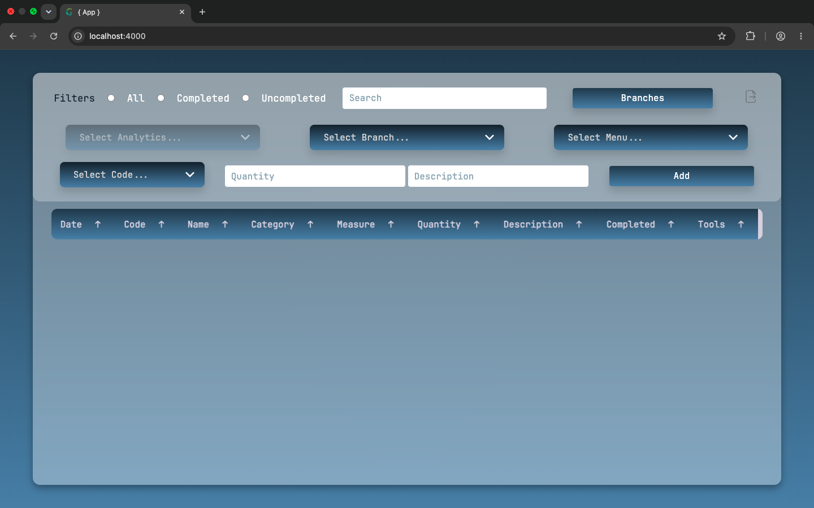
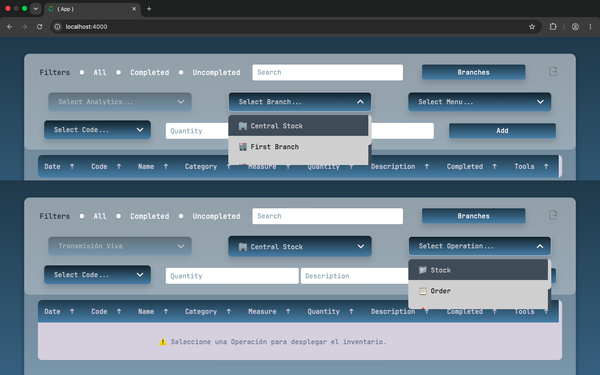
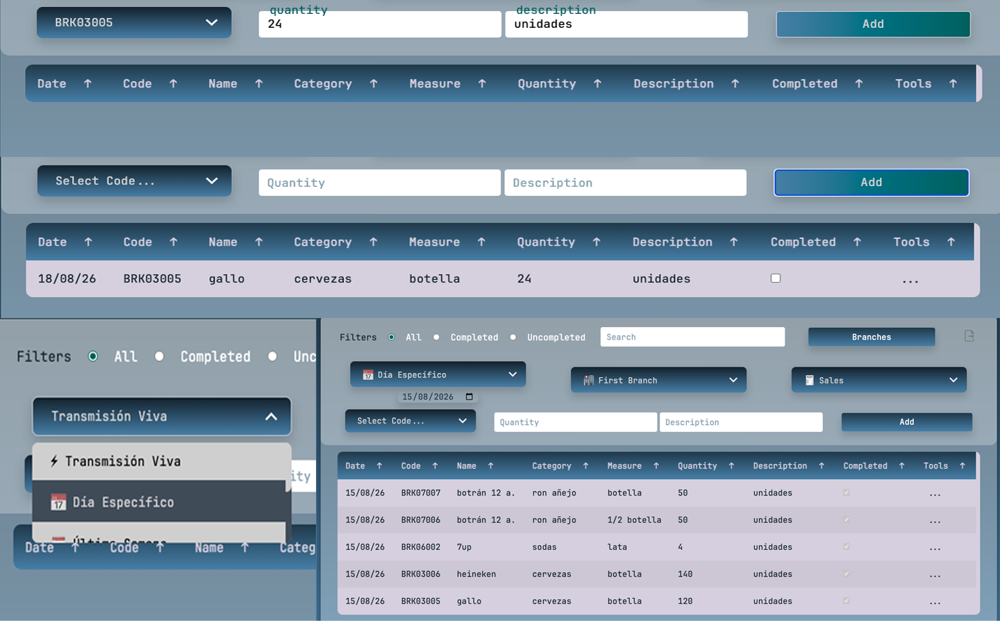
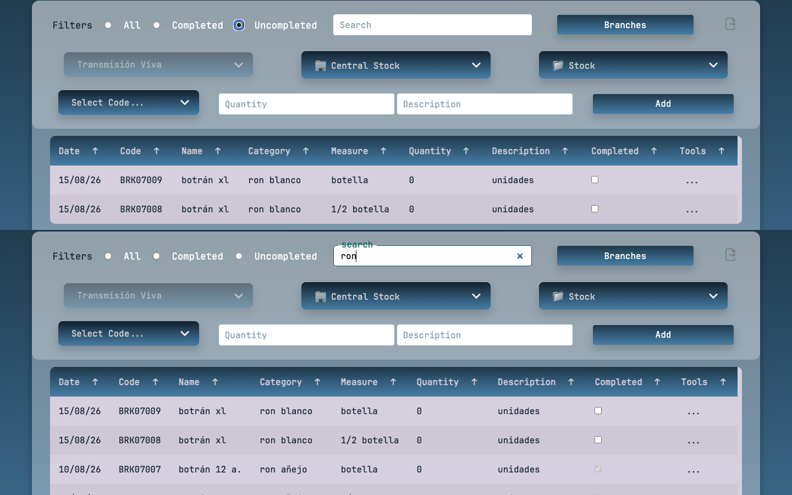
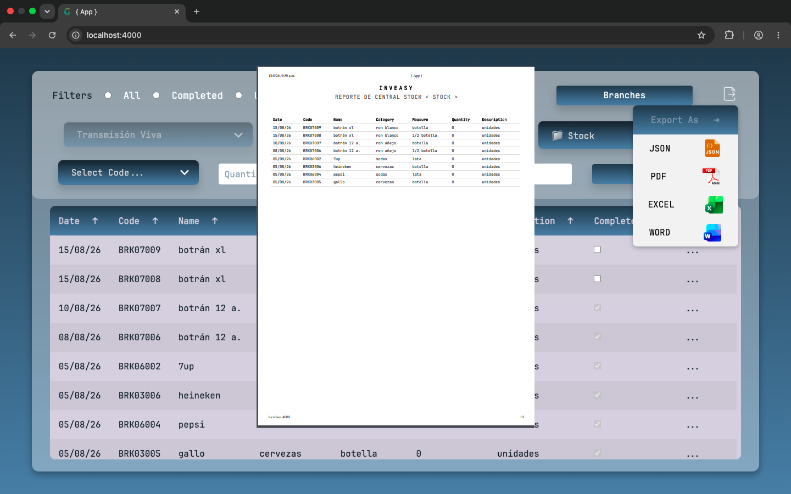
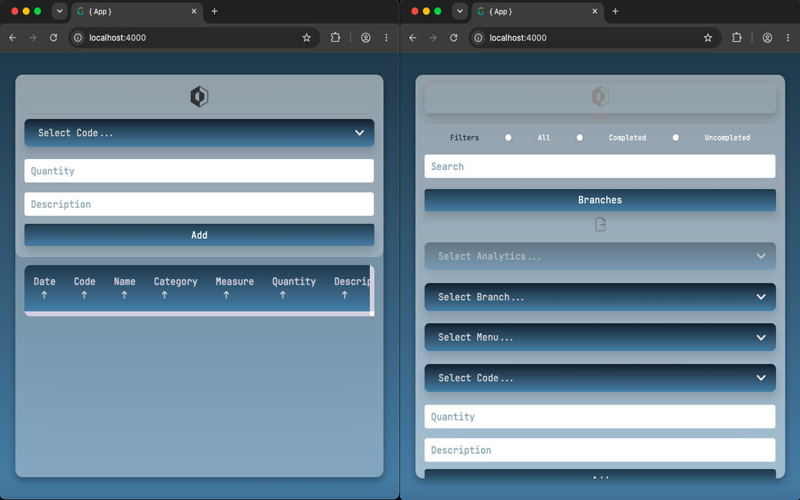

¿Qué es INVEASY App?
(TypeScript, Node.js & Arquitectura Hexagonal)

Rendimiento Algorítmico de Élite
(Algoritmia Avanzada y Estructuras Indexadas)

Sincronización SSE y Control de CPU/RAM
(Server-Sent Events & Procesamiento Asíncrono)

Reactividad Multiparámetro Inmediata
(Vanilla JS, DOM Querying & RAM Re-indexing)

Ordenamiento Indexado y Exportación Local
(Vanilla JS, Data Streams & Document Formatting)

Diseño Mobile-First y Flexibilidad Líquida
(Media Queries, Grid-Reflow & Touch Optimization)